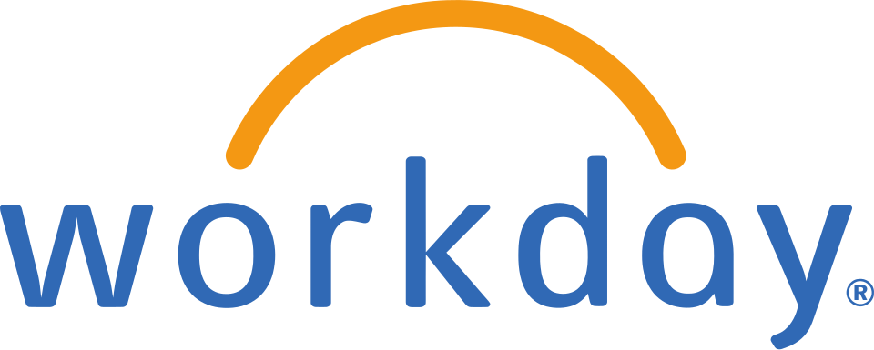

워크데이 Workday, Inc.
워크데이(Workday, Inc.)는 미국의 온디맨드 기업용 소프트웨어 공급업체이다. 클라우드 기반 재무 관리, 인적 자원 관리, 학생 정보 시스템을 공급한다.
최종 업데이트

워크데이는 어떤 브랜드인가
워크데이는 미국에서 온디맨드 방식의 기업용 소프트웨어를 공급한다. 사업 영역은 재무 관리, 인적 자원 관리, 학생 정보 시스템으로 구성한다.
본사는 플레전턴이며, 2005년 David Duffield와 Aneel Bhusri가 공동 설립했다. 2012년 10월 기업 공개를 시작했고 이 과정에서 회사 가치를 95억 달러로 평가했다.
시장에서는 SAP Successfactors, Dayforce, UKG, Oracle과 경쟁한다. 2020년에는 직원 만족도 조사에 기반한 Fortune의 일하기 좋은 100대 기업 목록에서 5위를 차지했다.
워크데이는 어떻게 시작되고 성장했나
워크데이는 Oracle이 PeopleSoft를 인수한 뒤인 2005년, PeopleSoft 창립자이자 전 CEO인 David Duffield와 전 최고 전략가 Aneel Bhusri가 함께 설립했다. 회사의 출발은 ERP 회사에서 창립자와 최고 전략가로 활동했던 두 사람이 별도 기업을 공동 창업한 과정에 해당한다.
2012년 10월에는 기업 공개를 시작했으며, 이 기업 공개 과정에서 회사 가치를 95억 달러로 평가했다.
워크데이의 브랜드 아이덴티티는 무엇인가
재무와 인적 자원 관리뿐 아니라 학생 정보 시스템까지 온디맨드 방식으로 공급하는 클라우드 소프트웨어 사업 구성이 특징이다.
워크데이의 대표 제품과 서비스는 무엇인가
워크데이는 온디맨드 방식으로 재무 관리, 인적 자원 관리, 학생 정보 시스템 소프트웨어를 공급한다. 모든 사업 영역은 클라우드 기반 소프트웨어 공급 방식으로 운영한다.
제품군은 재무 관리 소프트웨어, 인적 자원 관리 소프트웨어, 학생 정보 시스템 소프트웨어라는 세 범주로 구성한다. 이러한 제품과 서비스를 바탕으로 SAP Successfactors, Dayforce, UKG, Oracle과 경쟁한다.
워크데이는 지금 어떤 상태인가
워크데이의 본사는 플레전턴이다. 기업용 클라우드 소프트웨어 시장에서 SAP Successfactors, Dayforce, UKG, Oracle과 경쟁한다.
2020년 Fortune은 일하기 좋은 100대 기업 목록에서 5위로 선정했고, San Francisco Business Times는 베이 지역에서 가장 일하기 좋은 기업 부문 2위로 선정했다.
워크데이 로고는 어떻게 변해왔나
자주 묻는 질문
워크데이는 어느 나라 브랜드인가요?
워크데이는 미국의 기술·전자 브랜드입니다.
워크데이는 언제 설립되었나요?
워크데이는 2005년 설립되었습니다.
워크데이의 브랜드 아이덴티티는 무엇인가요?
재무와 인적 자원 관리뿐 아니라 학생 정보 시스템까지 온디맨드 방식으로 공급하는 클라우드 소프트웨어 사업 구성이 특징이다.
워크데이의 대표 제품은 무엇인가요?
워크데이는 온디맨드 방식으로 재무 관리, 인적 자원 관리, 학생 정보 시스템 소프트웨어를 공급한다.
워크데이는 현재 어떤 상태인가요?
워크데이의 본사는 플레전턴이다.
워크데이의 창업자는 누구인가요?
워크데이의 창업자는 David Duffield, Aneel Bhusri입니다(위키데이터 기준).
워크데이의 본사는 어디에 있나요?
워크데이의 본사는 플레전턴에 있습니다(위키데이터 기준).
출처와 검증
워크데이 관련 참고: 공식 웹사이트 · 위키데이터 Q8034666 · 한국어 위키백과 · 영어 위키백과. 브랜드명은 한글과 원어를 함께 표기하되 데이터에 없는 표기는 만들지 않습니다. 기원 국가·설립연도는 검수된 정의문에서 확인된 값을 우선하고, 없을 때만 공식 웹사이트 URL이 일치하는 위키데이터 개체의 값을 씁니다. 위키데이터 값은 2026-09-12 기준입니다.